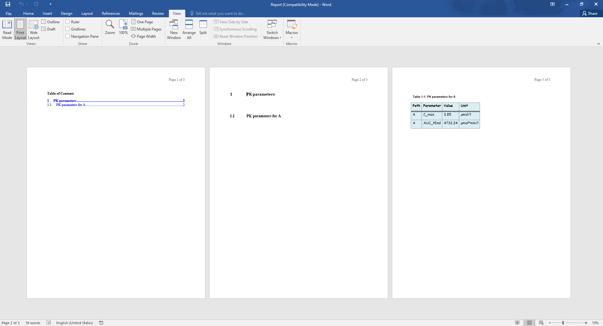

require(ospsuite.reportingengine)
#> Loading required package: ospsuite.reportingengine
#> Loading required package: ospsuite
#> Loading required package: rClr
#> Loading the dynamic library for Microsoft .NET runtime...
#> Loaded Common Language Runtime version 4.0.30319.42000
#>
#> Attaching package: 'ospsuite'
#> The following object is masked from 'package:base':
#>
#> %||%
#> Loading required package: tlf
#>
#> Attaching package: 'ospsuite.reportingengine'
#> The following object is masked from 'package:tlf':
#>
#> setDefaultErrorbarCapSizeFor each workflow, the Reporting Engine exports a markdown version of your
report (.md). A Word version (.docx) - converted from
the markdown - is also exported by default via the logical field createWordReport.
This article aims at documenting available options and settings that work with the conversion of the markdown report into its word version.
Installing Pandoc
Pandoc is the software responsible for the conversion of the markdown report into its word version. As a consequence, the installation of pandoc is required for this feature. If you need to install pandoc, please follow the instructions provided on the GitHub.
Word Conversion Template
The Word Conversion Template is a word document used by
pandoc that provides a reference styling of your word
document. The location of the template file needs to be indicated to
workflow field wordConversionTemplate.
MS Word view of Word Conversion Template

How to get the template
Workflows use the following default template which can be downloaded through the link reference.docx
Otherwise you can copy the file directly from its location within the package as illustrated below.
wordConversionTemplate <- system.file("extdata", "reference.docx", package = "ospsuite.reportingengine")
file.copy(from = wordConversionTemplate, to = getwd())How to update the template
As indicated in pandoc documentation, Paragraph styles, Character styles and Table style items can be modified in the Word Conversion Template.
In the following bullet points, tutorial videos shows how to update such style items.
Paragraph and Character styles
Table style
Note that only one Table style named Table is used by pandoc for styling the converted tables.
Note that the font in the table needs to be defined by updating the character style named Compact.
Limitations: As indicated in issue #857, styling does not account for text alignment/justification within the table.
An Example
Using Example 1 from the article PK Parameters and the word conversion template defined in the tutorials above. The following word document is generated by indicating the template as done below
Word Version of Report of Example 1
myExampleWorkflow <- MeanModelWorkflow$new(
simulationSets = myExampleSet,
workflowFolder = "myExample-Results",
wordConversionTemplate = "reference.docx"
)
Tips for Report Conversion
Before rendering the word report, the Reporting Engine creates an
intermediate markdown report dedicated to the conversion
("report-word.md"). Then, the intermediate report and the
configuration options ("report-configuration.txt") are
provided to pandoc using the knitr
package as illustrated below.
Users can leverage the features from the Reporting Engine processing of the markdown.
knitr::pandoc(input = "report-word.md", format = "docx", config = "report-configuration.txt")The content of the configuration options
("report-configuration.txt") is described below:
embed-resources:
standalone:
wrap: none
toc:
from: markdown+tex_math_dollars+superscript+subscript+raw_attribute
reference-doc: <wordConversionTemplate>
resource-path: <workflowFolder>The option +raw_attribute allows pandoc
to leave raw code block as is. This option is convenient when including
page breaks and bookmarks in your word reports as described below.
Include LaTeX equations
The option +tex_math_dollars allows pandoc
to translate mathematical equations defined in LaTeX.
Unfortunately, the translation works only to some extent as some
formatting options cannot be translated (e.g. \Huge - #1029).
Inline equations can be defined using within $..$ while
equation block within $$...$$ as illustrated below.
$$
A \rightarrow B \rightarrow C \\
\frac{dA}{dt} = -k_aA \\
\frac{dB}{dt} = k_aA - k_bB \\
\frac{dC}{dt} = k_bB - k_cC \\
$$would render
\[ A \rightarrow B \rightarrow C \\ \frac{dA}{dt} = -k_aA \\ \frac{dB}{dt} = k_aA - k_bB \\ \frac{dC}{dt} = k_bB - k_cC \]
Superscript and subscript can be indicated through html tags
The options +superscript and +subscript
allows pandoc
to translate ^...^ and ~...~ into superscript
and subscript within the word document.
The Reporting Engine internally translates all the html tags
<sup>...</sup> and
<sub>...</sub> of the markdown
report into ^...^ and ~...~.
Thus, you can directly include superscript and subscript html tags into sub parts of their markdown reports.
Bookmark and Referencing
The Reporting Engine also converts anchor html tag
<a id="..."</a> into
bookmarks.
The function anchor()
can be used to generate the tag using R or you can also copy and tune
the html below.
Then, the following raw openxml code block will be added to your intermediate markdown document before conversion into word.
Page Break
Users can implement page breaks in their word document by including
the tag <pagebreak> in their
markdown document. The tag will be converted by the Reporting Engine
into the following raw
openxml code.
Note that <pagebreak> is not an actual
html tag but a key tag exposed by the Reporting Engine for the
purpose of the conversion into word document
Paragraph alignment/justification
Users can include html div tag to indicate alignment in their markdown document. Alignment will be rendered both in previewing the markdown document and the word document.
The examples below show how to implement all available alignments
Left aligned
- Translated as
- Rendered as
Centered
- Translated as
- Rendered as
Right aligned
- Translated as
- Rendered as